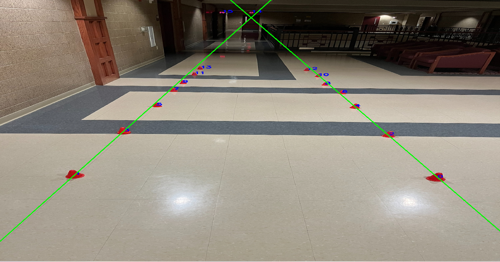

In my OpenCV project, I aimed to analyze images of cones lined up, enhancing their visibility
for autonomous cars. I used C++ programming along with the OpenCV library to achieve this. The
goal was to draw lines across the cones, providing a clear reference path for the autonomous
vehicles.
By detecting and drawing lines on the cones, I intended to assist autonomous cars in navigating
safely through the designated path. This improved visibility helps the cars avoid collisions
and maintain a smooth and accurate trajectory along the line of cones, ensuring efficient and
safe autonomous driving.
//Image

I plan to use this knowledge as a member of the Wisconsin Autonomous Club to enhance the
capabilities of autonomous cars through advanced image analysis and efficient object detection.
I look forward to gaining hands-on experience and foster innovation in the exciting realm of
autonomous driving.